Dodavanje animacija
Animacija je vizuelni efekat koji vam omogućava da animirate tekst, objekte i grafiku kako biste svoju prezentaciju učinili dinamičnijom i naglasili važne informacije. Možete kontrolisati kretanje, boju i veličinu teksta, objekata i grafike.
Primena efekta animacije
- prebacite se na karticu Animacija na gornjoj traci sa alatkama,
- izaberite tekst, objekat ili grafički element na koji želite da primenite efekat animacije,
- izaberite efekat Animacija iz galerije animacija,
- izaberite smer kretanja efekta animacije klikom na Parametri pored galerije animacija. Parametri na listi zavise od efekta koji primenjujete.
Možete pregledati efekte animacije na trenutnom slajdu. Podrazumevano, efekti animacije će se automatski reprodukovati kada ih dodate na slajd, ali to možete isključiti. Kliknite na padajući meni Pregled na kartici Animacija i izaberite režim pregleda:
- Pregled da biste prikazali pregled kada kliknete na dugme Pregled,
- Automatski pregled da biste automatski prikazali pregled kada dodate animaciju na slajd ili zamenite postojeću.
Tipovi animacija
Svi efekti animacije navedeni su u galeriji animacija. Kliknite na padajuću strelicu da biste je otvorili. Svaki efekat animacije predstavljen je ikonom u obliku zvezde. Animacije su grupisane prema trenutku u kom se pojavljuju:
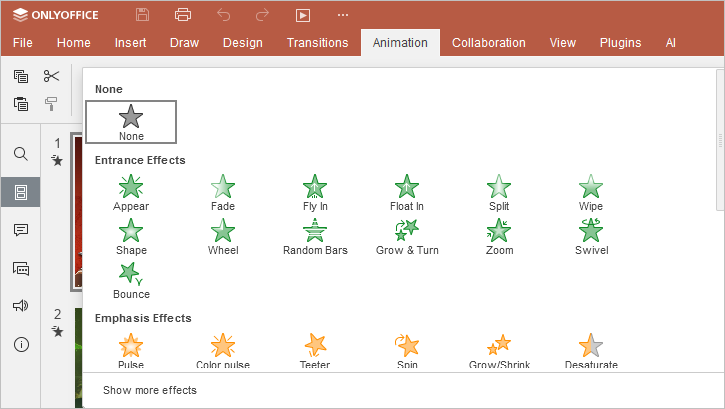
Efekti Ulazak određuju kako se objekti pojavljuju na slajdu i u galeriji su obojeni zeleno.
Efekti Naglašavanje menjaju veličinu ili boju objekta kako bi se objekat naglasio i privukla pažnja publike, i u galeriji su obojeni žuto ili dvobojno.
Efekti Izlazak određuju kako objekti nestaju sa slajda i u galeriji su obojeni crveno.
Putanje kretanja određuju kretanje objekta i putanju koju prati. Ikone u galeriji predstavljaju predloženu putanju. Dostupna je i opcija Prilagođena putanja. Da biste saznali više, pročitajte sledeći članak.
Pomerite se nadole kroz galeriju animacija da biste videli sve efekte uključene u galeriju. Ako ne vidite potrebnu animaciju u galeriji, kliknite na opciju Prikaži više efekata na dnu galerije.
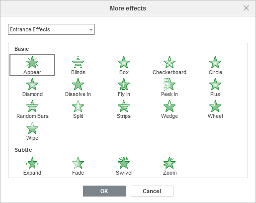
Ovde ćete pronaći kompletnu listu efekata animacije. Efekti su dodatno grupisani prema vizuelnom uticaju koji imaju na publiku.
- Efekti Ulazak, Naglašavanje i Izlazak grupisani su po kategorijama Osnovno, Suptilno, Umereno i Uzbudljivo.
- Efekti Putanja kretanja grupisani su po kategorijama Osnovno, Suptilno i Umereno.
Primena više animacija
Možete dodati više od jednog efekta animacije na isti objekat. Da biste dodali još jednu animaciju,
- kliknite na dugme Dodaj animaciju na kartici Animacija.
- Otvoriće se lista efekata animacije. Ponovite korake 3 i 4 iznad za primenu animacije.
Ako koristite galeriju animacija, a ne dugme Dodaj animaciju, prvi efekat animacije biće zamenjen novim. Mali kvadrat pored objekta prikazuje redne brojeve primenjenih efekata.
Čim dodate više efekata na objekat, ikona Višestruko pojavljuje se u galeriji animacija.
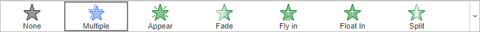
Promena redosleda efekata animacije na slajdu
- Kliknite na kvadratnu oznaku animacije.
- Kliknite na strelice
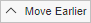
ili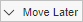
na kartici Animacija da biste promenili redosled pojavljivanja na slajdu.
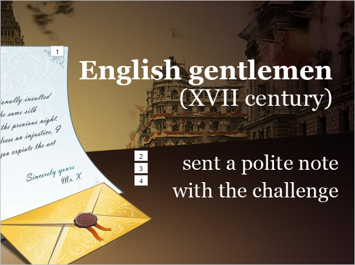
Podešavanje vremena animacije
Koristite opcije vremena na kartici Animacija da biste podesili početak, trajanje, kašnjenje, ponavljanje i premotavanje animacija na slajdu.
Opcije pokretanja animacije
- Na klik – animacija se pokreće kada kliknete na slajd. Ovo je podrazumevana opcija.
- Sa prethodnim – animacija se pokreće kada se pokrene prethodni efekat animacije i efekti se pojavljuju istovremeno.
- Nakon prethodnog – animacija se pokreće odmah nakon prethodnog efekta animacije.
Napomena: efekti animacije se automatski numerišu na slajdu. Sve animacije podešene na Sa prethodnim i Nakon prethodnog dobijaju broj animacije sa kojom su povezane, jer će se pojaviti automatski.
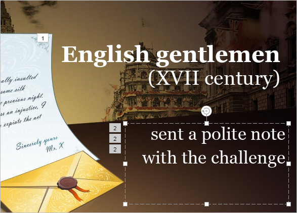
Opcije okidača animacije
Kliknite na dugme Okidač i izaberite jednu od odgovarajućih opcija:
- Na klik u nizu – za pokretanje sledeće animacije u nizu svaki put kada kliknete bilo gde na slajdu. Ovo je podrazumevana opcija.
- Na klik na - za pokretanje animacije kada kliknete na objekat koji izaberete iz padajuće liste.
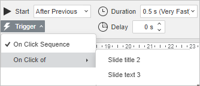
Ostale opcije vremena
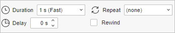
Trajanje – koristite ovu opciju da biste odredili koliko dugo želite da se animacija prikazuje. Izaberite jednu od dostupnih opcija iz menija ili unesite potrebnu vremensku vrednost.
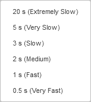
Kašnjenje – koristite ovu opciju ako želite da se izabrana animacija prikazuje u određenom vremenskom periodu ili ako vam je potrebna pauza između efekata. Koristite strelice da izaberete potrebnu vremensku vrednost ili unesite potrebnu vrednost u sekundama.
Ponovi – koristite ovu opciju ako želite da se animacija prikaže više puta. Kliknite u polje Ponovi i izaberite jednu od dostupnih opcija ili unesite svoju vrednost.
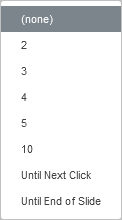
Premotaj – označite ovo polje ako želite da vratite objekat u prvobitno stanje kada se animacija završi.
Opcije boja animacije
Možete podesiti završnu boju za efekte animacije koji menjaju boju.
Kliknite na dugme Parametri na gornjoj traci sa alatkama i izaberite potrebnu boju na paleti Boje teme ili Standardne boje.
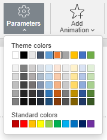
Okno animacije
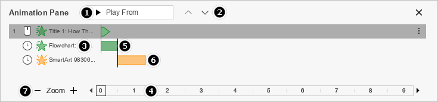
Okno animacije prikazuje podešene animacije i omogućava lakše upravljanje animacijama.
-
- Pusti sve - kliknite na ovo dugme da biste pustili sve trenutno kreirane animacije.
- Pusti izabrano - kliknite na ovo dugme da biste pustili sve trenutno izabrane animacije. Tokom reprodukcije, u listi se prikazuju samo izabrane animacije.
- Pusti od - kliknite na ovo dugme da biste pustili animacije počev od izabrane i dalje niz listu. Tokom reprodukcije, u listi se prikazuju samo izabrane animacije.
- Zaustavi - kliknite na ovo dugme da biste zaustavili reprodukciju animacije.
- Koristite dugmad i da biste promenili redosled animacija objekata na slajdu.
- Da biste podesili tačku Početak, kliknite desnim tasterom miša na animaciju ili kliknite na dugme Više desno od animacije.
- Vremenska linija slajda prikazana je ispod okna animacije.
- Da biste promenili trajanje animacije, kliknite i prevucite njenu završnu tačku na oknu do željene vremenske tačke.
- Da biste pomerili animaciju duž vremenske linije, kliknite direktno na njeno dijagramsko predstavljanje na oknu i prevucite je do željene vremenske tačke.
- Koristite dugmad interfejsa Zum da biste uvećali ili umanjili vremensku liniju.